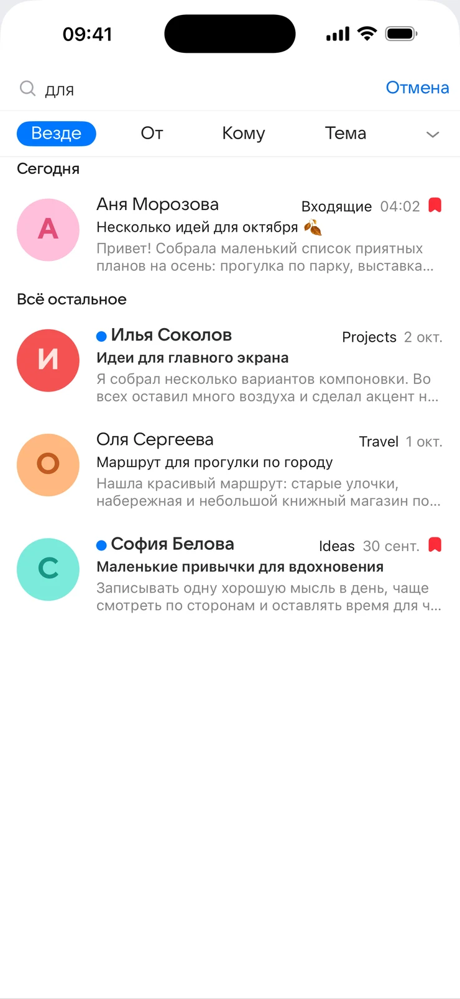
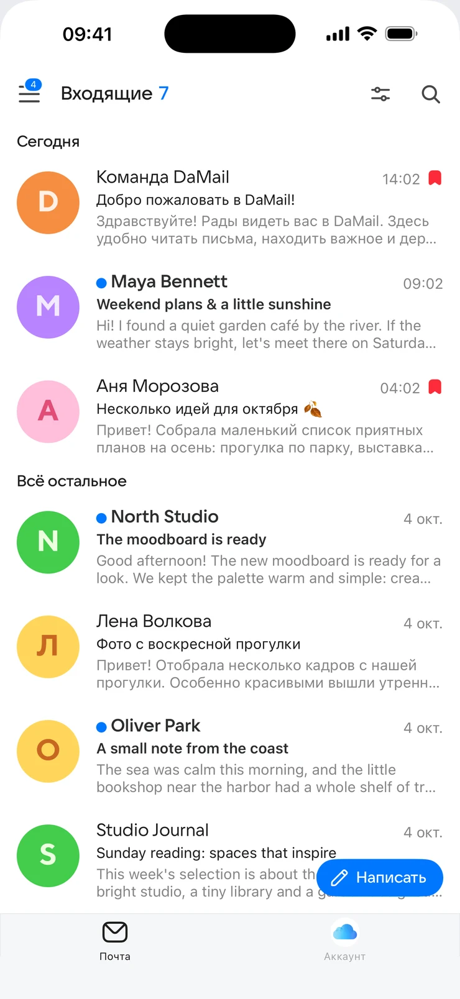
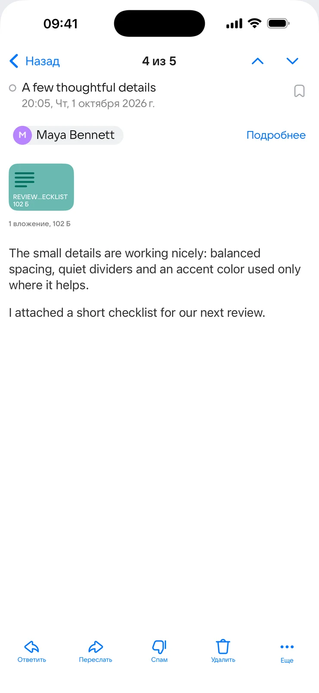
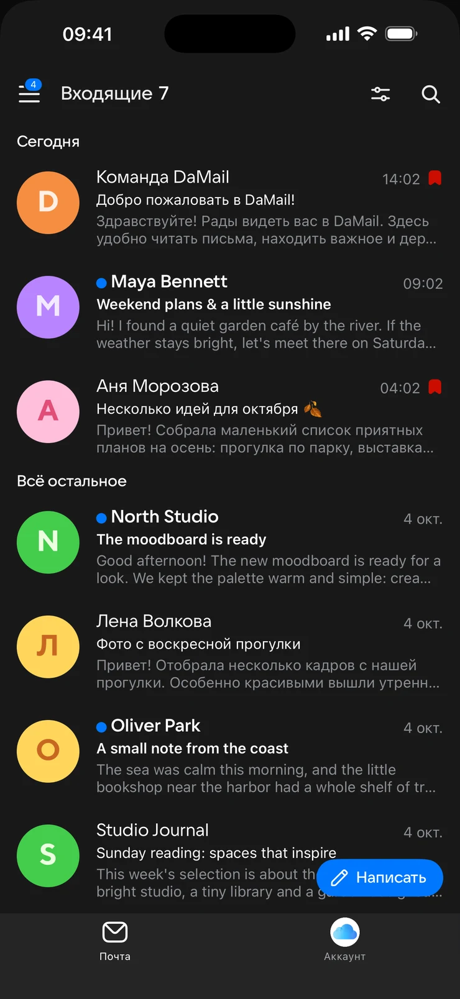

Выделяй важное
Отмечайте письма флагом и распределяйте переписку по папкам
Письма, вложения и люди на связи. Работайте с почтой в своём ритме — дома, в дороге и между делами



Подключите существующий ящик совместимого почтового сервиса и держите переписку в порядке
Отмечайте письма флагом и распределяйте переписку по папкам
Открывайте письма и вложения. Отвечайте и пересылайте информацию
Ищите по отправителю, получателю, теме и тексту письма
Пишите близким и коллегам. Сохраняйте черновики на потом
Темная тема
Выбирайте светлую или тёмную тему. Или позвольте DaMail следовать оформлению системы
Один почтовый клиент — для iPhone и iPad
